Authors: Mika Yagoda, Raja Giryes
Below are additional results not included in the paper.
| Prompt | ViT-B/16 | ViT-B/32 | TeCoA | Interpretability |
|---|---|---|---|---|
| A high quality image of a bear | |
|
|
|
| A high quality image of a golden retriever | |
|
|
|
| A high quality image of a goldfish | |
|
|
|
Prompt: "A high quality image of a goldfish"
| STD \ Steps | 2 | 3 | 5 | 7 | 10 | 25 | 100 |
|---|---|---|---|---|---|---|---|
| 0.1 | 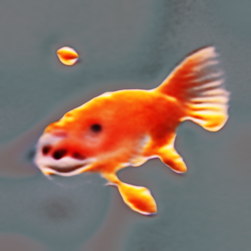 | 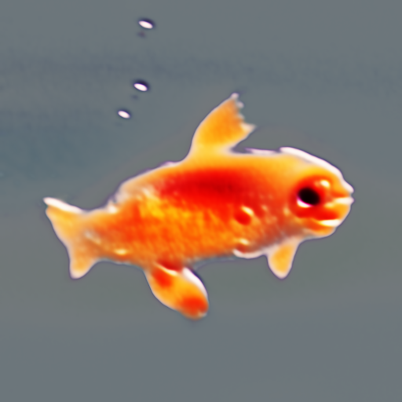 | 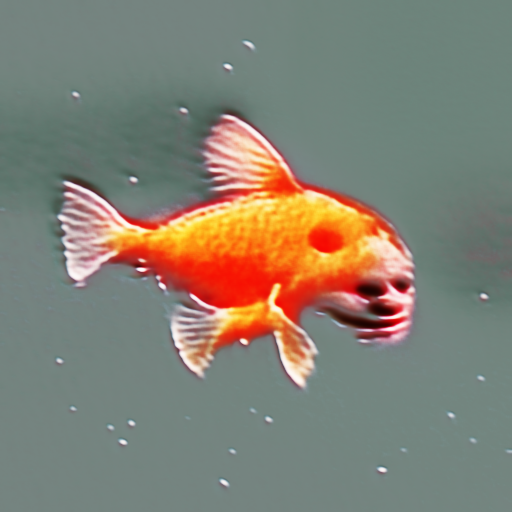 | 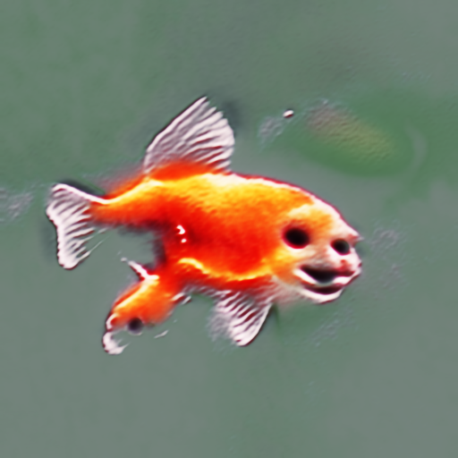 | 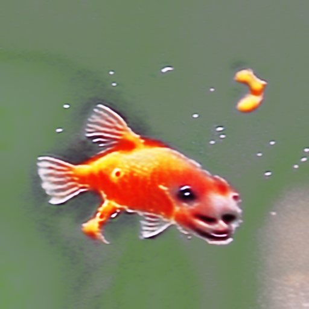 | 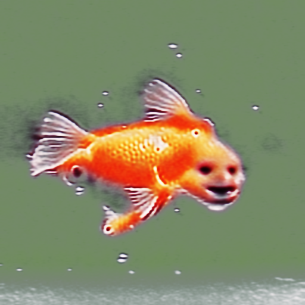 |  |
| 0.3 | 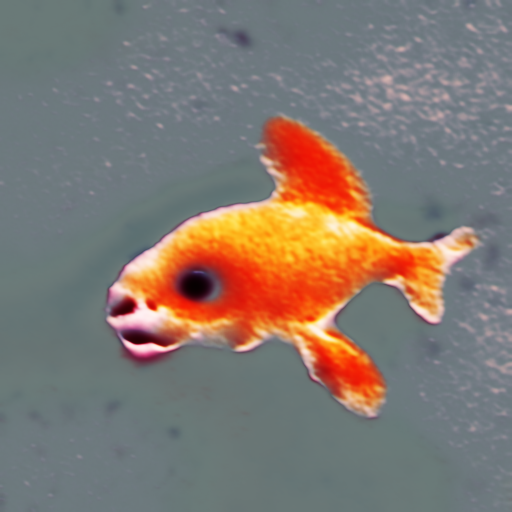 | 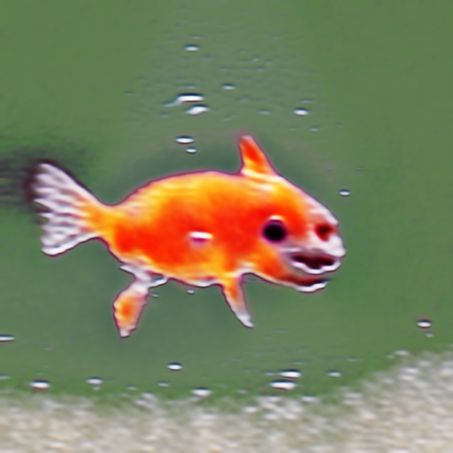 | 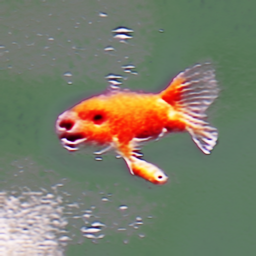 | 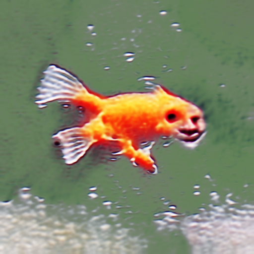 | 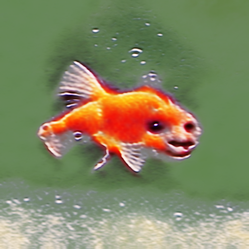 | 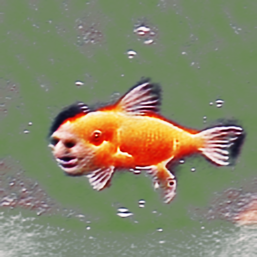 | 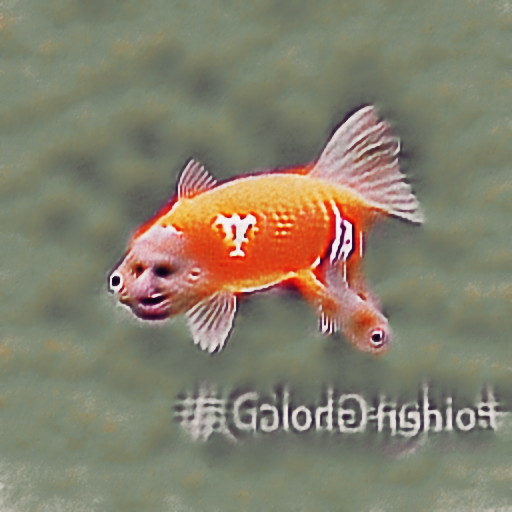 |
Prompt: "A high quality image of a goldfish"
| Prompt | ViT-B/16 | ViT-B/32 | TeCoA | Interpretability |
|---|---|---|---|---|
| A high quality image of a goldfish | 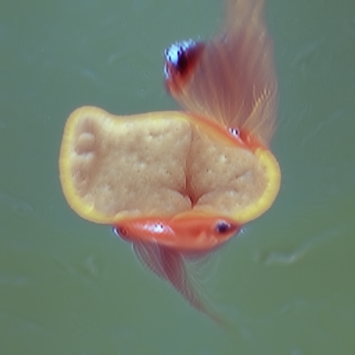 | 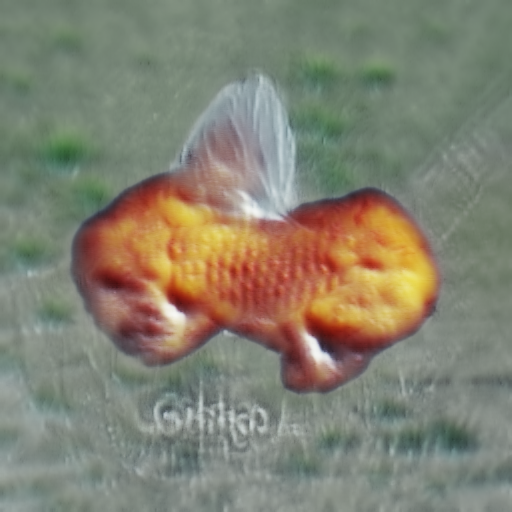 | 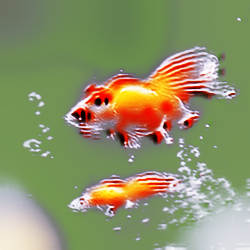 | 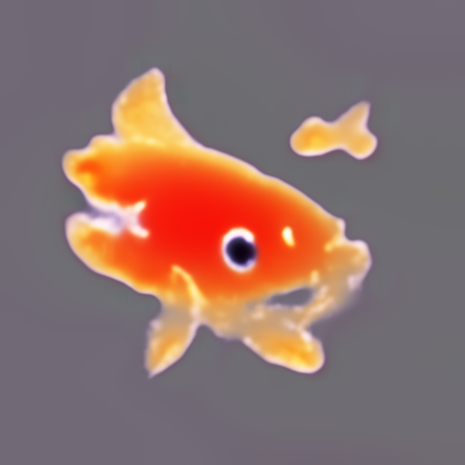 |